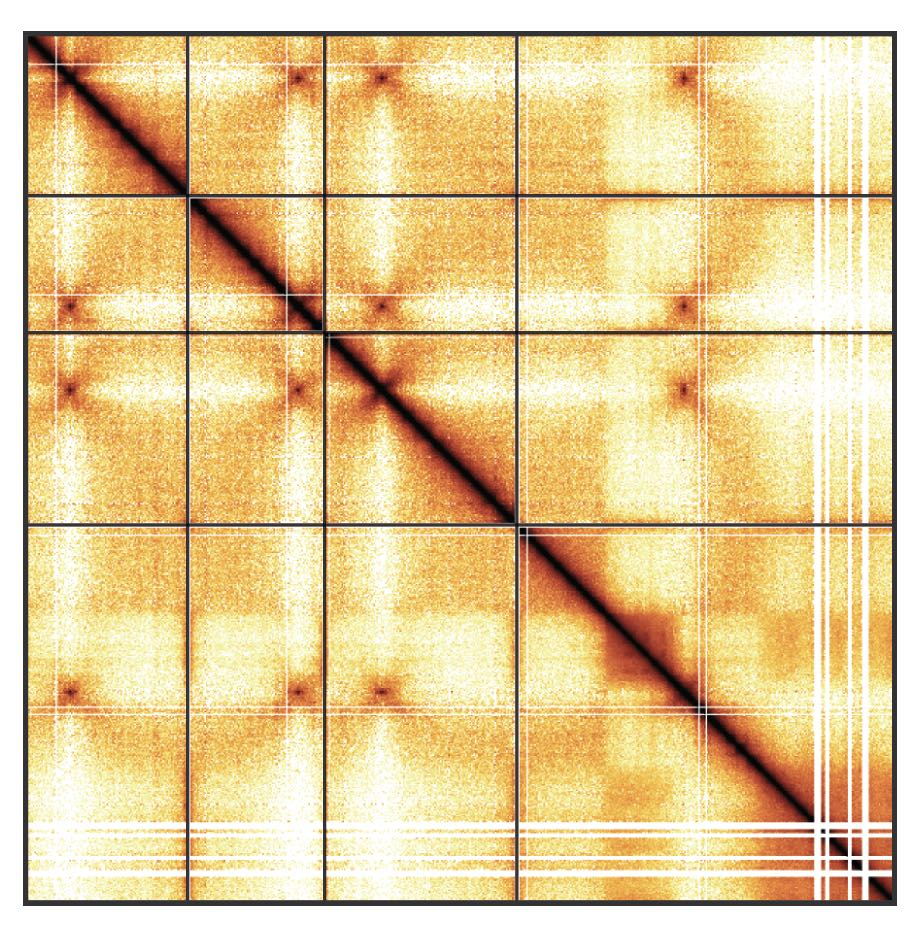

Orchestrating Hi-C analysis with Bioconductor
Welcome

Authors: Jacques Serizay [aut, cre]
Version: 0.98.1
Modified: 2023-02-13
Compiled: 2023-03-10
Environment: R Under development (unstable) (2023-02-09 r83797), Bioconductor 3.17
License: MIT + file LICENSE
Copyright: J. Serizay
This is the landing page of the “Orchestrating Hi-C analysis with Bioconductor” book. The primary aim of this book is to introduce the R user to Hi-C analysis. It starts with key concepts important for the analysis of chromatin conformation capture and then presents Bioconductor tools that can be leveraged to process, analyse, explore and visualize Hi-C data.
This project is currently under active development. Several sections of this book may not be accurate, as the packages introduced in this book are still maturing.
Table of contents
This book is divided in three parts:
Part I: Introduction to Hi-C analysis
- Chapter 1: General principles and Hi-C data pre-processing
- Chapter 2: The different R classes implemented to analyse Hi-C
- Chapter 3: Manipulating Hi-C data in R
- Chapter 4: Hi-C data visualization
Part II: In-depth Hi-C analysis
- Chapter 5: Matrix-centric analysis
- Chapter 6: Interactions-centric analysis
- Chapter 7: Finding topological features from a Hi-C contact matrix
Part III: Hi-C analysis workflows
Requirements
This books aims to demonstrate how to pre-process, parse and investigate Hi-C data in R. For this reason, a significant portion of this book consists of executable R code chunks. To be able to reproduce the examples demonstrated in this book and go further in the analysis of your real datasets, you will need to rely on several dependencies.
The most important dependency is
Ritself! Make sure you haveR >= 4.3. You can check that by typingversionin an R console. If you do not haveR >= 4.3installed, we highly recommend to update yourRversion, as most extra dependencies will requireR >= 4.3.The following
Rcode will set up most of the extra dependencies:
For developers or advanced R users, there are two alternatives:
- You can directly install
develversions of these packages along with their dependencies:
install.packages("pak", repos = "https://r-lib.github.io/p/pak/devel/")
pak::pkg_install("js2264/HiCExperiment", ask = FALSE, dependencies = c("Depends", "Imports", "Suggests"))
pak::pkg_install("js2264/HiCool", ask = FALSE, dependencies = c("Depends", "Imports", "Suggests"))
pak::pkg_install("js2264/HiContacts", ask = FALSE, dependencies = c("Depends", "Imports", "Suggests"))
pak::pkg_install("js2264/HiContactsData", ask = FALSE, dependencies = c("Depends", "Imports", "Suggests"))
pak::pkg_install("js2264/fourDNData", ask = FALSE, dependencies = c("Depends", "Imports", "Suggests"))
pak::pkg_install("js2264/DNAZooData", ask = FALSE, dependencies = c("Depends", "Imports", "Suggests"))- Alternatively, if you have
dockerinstalled, the easiest approach would be to run the following command in ashellterminal:
docker run -it ghcr.io/js2264/ohca:latest RThis will fetch a docker image with the latest development versions of the aformentioned packages pre-installed, and initate an interactive R session.
Reproducibility
Building book
The OHCA book has been rendered with R thanks to a number of packages, including but not only:
devtoolsquartorebook
To build this book locally, you can run:
bash
git clone git@github.com:js2264/OHCA.git && cd OHCA
quarto renderIn addition, the actual book rendering is done by GitHub Actions, and the rendered static website is hosted by GitHub Pages.
Session info
##
## Attaching package: 'HiContacts'
## The following object is masked from 'package:base':
##
## merge
## Loading required package: ExperimentHub
## Loading required package: BiocGenerics
##
## Attaching package: 'BiocGenerics'
## The following object is masked from 'package:HiCExperiment':
##
## as.data.frame
## The following objects are masked from 'package:stats':
##
## IQR, mad, sd, var, xtabs
## The following objects are masked from 'package:base':
##
## anyDuplicated, aperm, append, as.data.frame, basename, cbind,
## colnames, dirname, do.call, duplicated, eval, evalq, Filter,
## Find, get, grep, grepl, intersect, is.unsorted, lapply, Map,
## mapply, match, mget, order, paste, pmax, pmax.int, pmin,
## pmin.int, Position, rank, rbind, Reduce, rownames, sapply,
## setdiff, sort, table, tapply, union, unique, unsplit, which.max,
## which.min
## Loading required package: AnnotationHub
## Loading required package: BiocFileCache
## Loading required package: dbplyr## ─ Session info ────────────────────────────────────────────────────────────
## setting value
## version R Under development (unstable) (2023-02-09 r83797)
## os Ubuntu 22.04.1 LTS
## system x86_64, linux-gnu
## ui X11
## language (EN)
## collate en_US.UTF-8
## ctype en_US.UTF-8
## tz Etc/UTC
## date 2023-03-10
## pandoc 2.19.2 @ /usr/local/bin/ (via rmarkdown)
##
## ─ Packages ────────────────────────────────────────────────────────────────
## package * version date (UTC) lib source
## AnnotationDbi 1.61.0 2022-11-01 [1] Bioconductor
## AnnotationHub * 3.7.1 2023-02-06 [1] Bioconductor
## assertthat 0.2.1 2019-03-21 [1] CRAN (R 4.3.0)
## basilisk 1.11.2 2022-11-09 [1] Bioconductor
## basilisk.utils 1.11.2 2023-01-31 [1] Bioconductor
## beeswarm 0.4.0 2021-06-01 [1] CRAN (R 4.3.0)
## Biobase 2.59.0 2022-11-01 [1] Bioconductor
## BiocFileCache * 2.7.1 2022-12-09 [1] Bioconductor
## BiocGenerics * 0.45.0 2022-11-01 [1] Bioconductor
## BiocIO 1.9.2 2023-01-19 [1] Bioconductor
## BiocManager 1.30.19 2022-10-25 [1] CRAN (R 4.3.0)
## BiocParallel 1.33.9 2022-12-23 [1] Bioconductor
## BiocStyle 2.27.1 2023-01-19 [1] Bioconductor
## BiocVersion 3.17.1 2022-11-04 [1] Bioconductor
## Biostrings 2.67.0 2022-11-01 [1] Bioconductor
## bit 4.0.5 2022-11-15 [1] CRAN (R 4.3.0)
## bit64 4.0.5 2020-08-30 [1] CRAN (R 4.3.0)
## bitops 1.0-7 2021-04-24 [1] CRAN (R 4.3.0)
## blob 1.2.3 2022-04-10 [1] CRAN (R 4.3.0)
## bookdown 0.32 2023-01-17 [1] CRAN (R 4.3.0)
## cachem 1.0.6 2021-08-19 [1] CRAN (R 4.3.0)
## cli 3.6.0 2023-01-09 [1] CRAN (R 4.3.0)
## CodeDepends 0.6.5 2018-07-17 [1] CRAN (R 4.3.0)
## codetools 0.2-19 2023-02-01 [2] CRAN (R 4.3.0)
## colorspace 2.1-0 2023-01-23 [1] CRAN (R 4.3.0)
## crayon 1.5.2 2022-09-29 [1] CRAN (R 4.3.0)
## curl 5.0.0 2023-01-12 [1] CRAN (R 4.3.0)
## data.table 1.14.6 2022-11-16 [1] CRAN (R 4.3.0)
## DBI 1.1.3 2022-06-18 [1] CRAN (R 4.3.0)
## dbplyr * 2.3.0 2023-01-16 [1] CRAN (R 4.3.0)
## DelayedArray 0.25.0 2022-11-01 [1] Bioconductor
## digest 0.6.31 2022-12-11 [1] CRAN (R 4.3.0)
## dir.expiry 1.7.0 2022-11-01 [1] Bioconductor
## DNAZooData * 0.99.0 2023-03-10 [1] Github (js2264/DNAZooData@a112059)
## dplyr 1.1.0 2023-01-29 [1] CRAN (R 4.3.0)
## ellipsis 0.3.2 2021-04-29 [1] CRAN (R 4.3.0)
## evaluate 0.20 2023-01-17 [1] CRAN (R 4.3.0)
## ExperimentHub * 2.7.0 2022-11-01 [1] Bioconductor
## fansi 1.0.4 2023-01-22 [1] CRAN (R 4.3.0)
## fastmap 1.1.0 2021-01-25 [1] CRAN (R 4.3.0)
## filelock 1.0.2 2018-10-05 [1] CRAN (R 4.3.0)
## fourDNData * 0.99.3 2023-03-10 [1] Github (js2264/fourDNData@386d05f)
## generics 0.1.3 2022-07-05 [1] CRAN (R 4.3.0)
## GenomeInfoDb 1.35.15 2023-02-02 [1] Bioconductor
## GenomeInfoDbData 1.2.9 2023-02-16 [1] Bioconductor
## GenomicRanges 1.51.4 2022-12-15 [1] Bioconductor
## ggbeeswarm 0.7.1 2022-12-16 [1] CRAN (R 4.3.0)
## ggplot2 3.4.1 2023-02-10 [1] CRAN (R 4.3.0)
## ggrastr 1.0.1 2021-12-08 [1] CRAN (R 4.3.0)
## glue 1.6.2 2022-02-24 [1] CRAN (R 4.3.0)
## graph 1.77.2 2023-02-24 [1] Bioconductor
## gtable 0.3.1 2022-09-01 [1] CRAN (R 4.3.0)
## HiCExperiment * 0.99.11 2023-03-10 [1] Github (js2264/HiCExperiment@a20c55f)
## HiContacts * 1.1.1 2023-03-10 [1] Github (js2264/HiContacts@ccee17c)
## HiContactsData * 1.1.9 2023-03-10 [1] Github (js2264/HiContactsData@275fab4)
## HiCool * 0.99.4 2023-03-10 [1] Github (js2264/HiCool@de2331b)
## htmltools 0.5.4 2022-12-07 [1] CRAN (R 4.3.0)
## htmlwidgets 1.6.1 2023-01-07 [1] CRAN (R 4.3.0)
## httpuv 1.6.9 2023-02-14 [1] CRAN (R 4.3.0)
## httr 1.4.4 2022-08-17 [1] CRAN (R 4.3.0)
## InteractionSet 1.27.0 2022-11-01 [1] Bioconductor
## interactiveDisplayBase 1.37.0 2022-11-01 [1] Bioconductor
## IRanges 2.33.0 2022-11-01 [1] Bioconductor
## jsonlite 1.8.4 2022-12-06 [1] CRAN (R 4.3.0)
## KEGGREST 1.39.0 2022-11-01 [1] Bioconductor
## knitr 1.42 2023-01-25 [1] CRAN (R 4.3.0)
## later 1.3.0 2021-08-18 [1] CRAN (R 4.3.0)
## lattice 0.20-45 2021-09-22 [2] CRAN (R 4.3.0)
## lazyeval 0.2.2 2019-03-15 [1] CRAN (R 4.3.0)
## lifecycle 1.0.3 2022-10-07 [1] CRAN (R 4.3.0)
## magrittr 2.0.3 2022-03-30 [1] CRAN (R 4.3.0)
## Matrix 1.5-3 2022-11-11 [2] CRAN (R 4.3.0)
## MatrixGenerics 1.11.0 2022-11-01 [1] Bioconductor
## matrixStats 0.63.0 2022-11-18 [1] CRAN (R 4.3.0)
## memoise 2.0.1 2021-11-26 [1] CRAN (R 4.3.0)
## mime 0.12 2021-09-28 [1] CRAN (R 4.3.0)
## munsell 0.5.0 2018-06-12 [1] CRAN (R 4.3.0)
## pillar 1.8.1 2022-08-19 [1] CRAN (R 4.3.0)
## pkgconfig 2.0.3 2019-09-22 [1] CRAN (R 4.3.0)
## plotly 4.10.1 2022-11-07 [1] CRAN (R 4.3.0)
## png 0.1-8 2022-11-29 [1] CRAN (R 4.3.0)
## promises 1.2.0.1 2021-02-11 [1] CRAN (R 4.3.0)
## purrr 1.0.1 2023-01-10 [1] CRAN (R 4.3.0)
## R6 2.5.1 2021-08-19 [1] CRAN (R 4.3.0)
## rappdirs 0.3.3 2021-01-31 [1] CRAN (R 4.3.0)
## Rcpp 1.0.10 2023-01-22 [1] CRAN (R 4.3.0)
## RCurl 1.98-1.10 2023-01-27 [1] CRAN (R 4.3.0)
## rebook 1.9.0 2022-11-01 [1] Bioconductor
## reticulate 1.28 2023-01-27 [1] CRAN (R 4.3.0)
## rhdf5 2.43.0 2022-11-01 [1] Bioconductor
## rhdf5filters 1.11.0 2022-11-01 [1] Bioconductor
## Rhdf5lib 1.21.0 2022-11-01 [1] Bioconductor
## rjson 0.2.21 2022-01-09 [1] CRAN (R 4.3.0)
## rlang 1.0.6 2022-09-24 [1] CRAN (R 4.3.0)
## rmarkdown 2.20 2023-01-19 [1] CRAN (R 4.3.0)
## rmdformats 1.0.4 2022-05-17 [1] CRAN (R 4.3.0)
## RSpectra 0.16-1 2022-04-24 [1] CRAN (R 4.3.0)
## RSQLite 2.2.20 2022-12-22 [1] CRAN (R 4.3.0)
## S4Vectors 0.37.3 2022-12-07 [1] Bioconductor
## scales 1.2.1 2022-08-20 [1] CRAN (R 4.3.0)
## sessioninfo 1.2.2 2021-12-06 [1] CRAN (R 4.3.0)
## shiny 1.7.4 2022-12-15 [1] CRAN (R 4.3.0)
## strawr 0.0.9 2021-09-13 [1] CRAN (R 4.3.0)
## stringi 1.7.12 2023-01-11 [1] CRAN (R 4.3.0)
## stringr 1.5.0 2022-12-02 [1] CRAN (R 4.3.0)
## SummarizedExperiment 1.29.1 2022-11-04 [1] Bioconductor
## tibble 3.1.8 2022-07-22 [1] CRAN (R 4.3.0)
## tidyr 1.3.0 2023-01-24 [1] CRAN (R 4.3.0)
## tidyselect 1.2.0 2022-10-10 [1] CRAN (R 4.3.0)
## tzdb 0.3.0 2022-03-28 [1] CRAN (R 4.3.0)
## utf8 1.2.3 2023-01-31 [1] CRAN (R 4.3.0)
## vctrs 0.5.2 2023-01-23 [1] CRAN (R 4.3.0)
## vipor 0.4.5 2017-03-22 [1] CRAN (R 4.3.0)
## viridisLite 0.4.1 2022-08-22 [1] CRAN (R 4.3.0)
## vroom 1.6.1 2023-01-22 [1] CRAN (R 4.3.0)
## xfun 0.37 2023-01-31 [1] CRAN (R 4.3.0)
## XML 3.99-0.13 2022-12-04 [1] CRAN (R 4.3.0)
## xtable 1.8-4 2019-04-21 [1] CRAN (R 4.3.0)
## XVector 0.39.0 2022-11-01 [1] Bioconductor
## yaml 2.3.7 2023-01-23 [1] CRAN (R 4.3.0)
## zlibbioc 1.45.0 2022-11-01 [1] Bioconductor
##
## [1] /usr/local/lib/R/site-library
## [2] /usr/local/lib/R/library
##
## ───────────────────────────────────────────────────────────────────────────